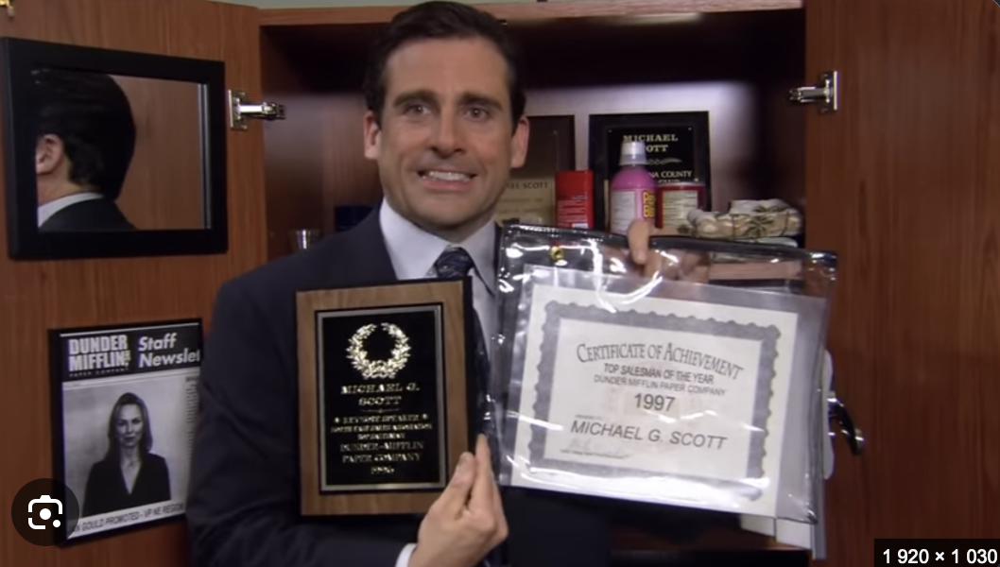
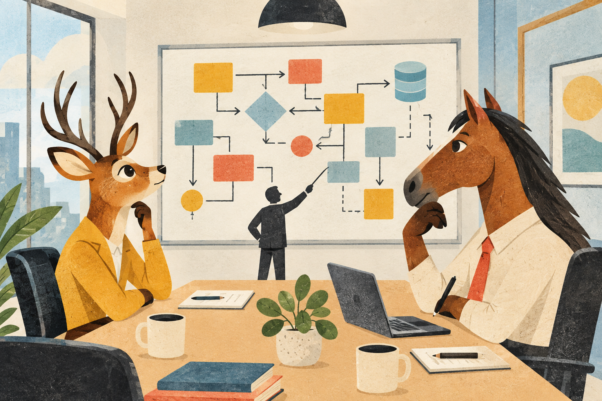

🦌
Masz oko do wzorców.
Sarna też patrzy w dal, ale Ty potrafisz jeszcze powiedzieć, co można z tym wzorcem zrobić.
Project Antler / candidate no. 001
Nie musisz mieć gotowej odpowiedzi na wszystko. Wystarczy ciekawość, doświadczenie i gotowość do spokojnej rozmowy o tym, jak budować rzeczy, które mają sens.
Najpierw trochę otuchy ↘Sarna też patrzy w dal, ale Ty potrafisz jeszcze powiedzieć, co można z tym wzorcem zrobić.
Koń nie pyta, czy sprint ma sens. Robi krok po kroku — i to jest całkiem dobra strategia.
— spokojne myślenie też jest supermocą
A memo from the regional manager
„Nie musisz wejść na rozmowę jako gotowy superbohater. Możesz wejść jako Ty — i po prostu porozmawiać.”
— Dział Perswazji, Saren i Delikatnego Dodawania Odwagi
A small confidence reset
To spotkanie dwóch stron, które sprawdzają, czy dobrze im się będzie razem pracować. Oni też chcą zrobić dobre wrażenie — naprawdę.
Możesz powiedzieć: „Nie wiem jeszcze, ale wiem, jak bym to sprawdził”. To jest dobra odpowiedź, nie porażka.
Spokojne zastanowienie się jest oznaką myślenia. Nawet Michael Scott czasem potrzebował chwili — zwykle kilku.
Jeśli to nie będzie ta oferta, zostanie doświadczenie, kolejna rozmowa i jeszcze lepszy pomysł na następną.
“You don't have to be fearless. You only have to be willing to try.
— The Antler Committee
A completely serious visual investigation
Dowody wizualne, że każda dobra decyzja zaczyna się od odrobiny chaosu.

““I am Beyoncé, always.”
— Michael Scott, unofficial data strategy
““I declare bankruptcy!”
— a perfectly valid response to technical debt

““That's what she said.”
— the only acceptable answer to an overlong architecture meeting
The actual opportunity
Final recommendation
Najgorsze, co może się wydarzyć, to interesująca rozmowa i trochę więcej pewności przed następną.